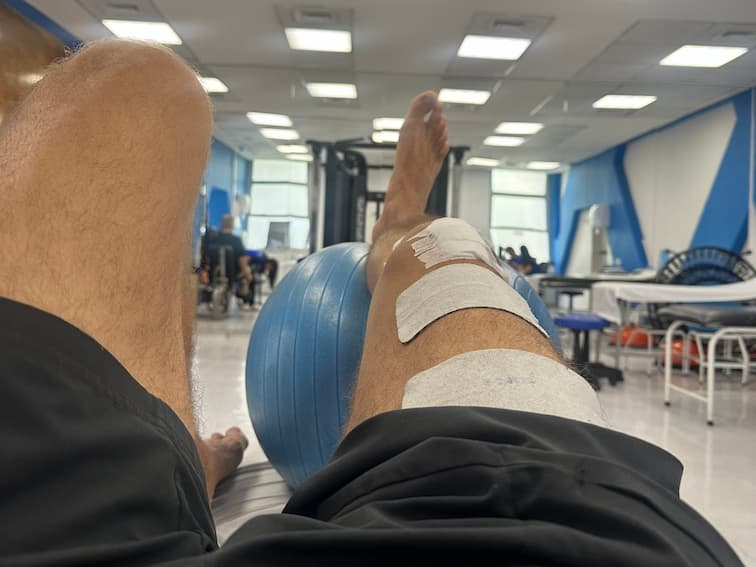

Week 3
•
Pain: 4/10
•
Swelling: 4/10
Day 19: Mobility Takes the Lead
A solid, productive day focused on mobility. Extension is largely there, but flexion remains the main challenge. Better sleep positions are helping recovery.
Read full entry →
